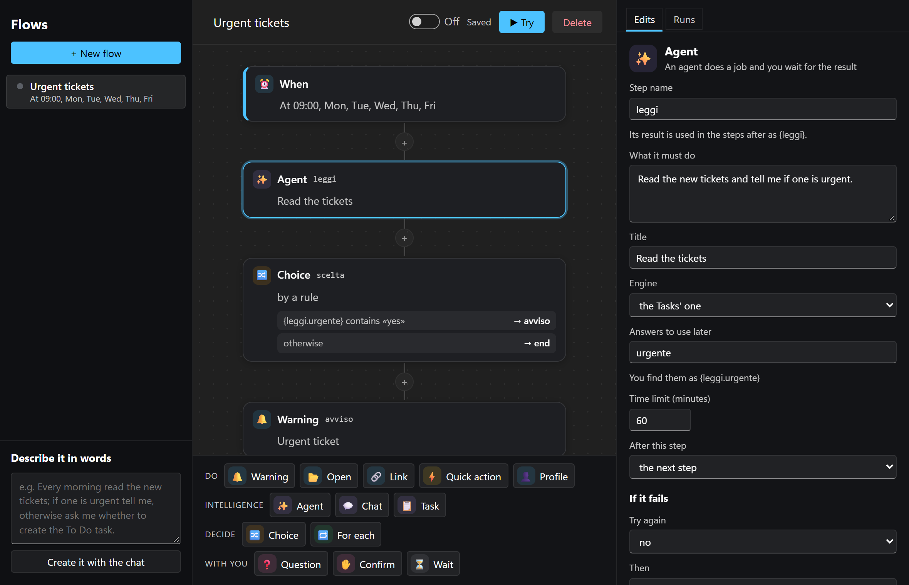
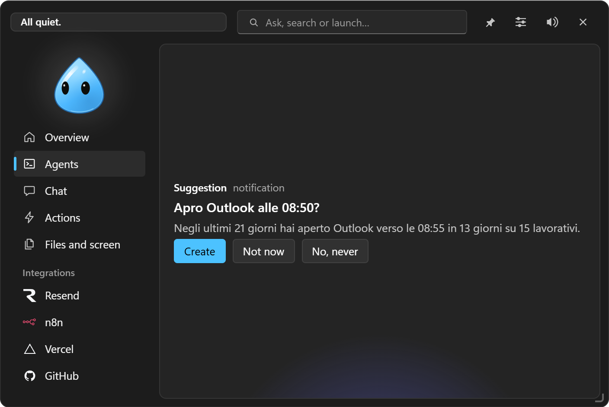

Automations
"When… if… then…" rules, created in Settings, in plain words in the chat or suggested from your habits.

#When
| Event | Example |
|---|---|
| At a time, on chosen days | at 9 on weekdays open Outlook and the management software |
| At PC startup | after 30 seconds switch to the Work profile |
| On unlocking the PC | a notice with the day's reminder |
| Back after N minutes without keyboard and mouse | reopen the work apps |
| Connecting to a Wi-Fi network | at the office open the shared folder |
| When a program starts | when you open Teams run "Mute" |
| A program comes to the foreground | in Excel show the shortcuts notice |
| Plugging in a USB stick or a disk | run the backup script |
| A file arrives in a folder | tell me about new scans |
| A download finishes | open the folder of downloaded PDFs |
| An integration or widget reports a problem or news | if the client's site goes down run the check script |
| An incoming 3CX call | open the client's record |
| A Teams meeting starts or ends | Focus profile during the meeting |
| An agent finished or waits for a permission | notice when Claude Code finishes |
| A dev server starts | open the address in the browser |
Only if (filter): for folders, downloads, integrations, calls and agents, words or extensions (.pdf) the event must contain.
#If
Conditions, all true (each can become "if not"): time window and days (also across midnight), Wi-Fi network, program open or in the foreground, on battery or under a percentage, away for N minutes, in a meeting (microphone or webcam in use), in front of a client.
Repeat: every time, at most every N minutes, or once a day.
#Then
A sequence of steps:
- run a quick action;
- show a notice in the island;
- switch profile;
- open a program, a folder or a link;
- ask the chat (it opens in the island with the answer);
- start a task;
- wait N minutes before the next step;
- ask before going on: a card in the island with Continue / Cancel listing the steps that follow; with no answer in 3 minutes the automation stops.
If a step fails, the next ones are skipped; with Go on after an error they run anyway.
In the steps you can use the event's data: {file}, {percorso}, {cartella}, {rete}, {programma}, {unità}, {testo}, {fonte}, {chiamante}, {numero}, {agente}, {progetto}, {porta}, {link}, {minuti}, and always {ora} and {data}. The editor lists the ones available for the chosen event. For safety they are encoded in links, a single argument in a program's arguments, and never enter scripts.
Each automation can be limited to a profile and tested right away with Try now. The Log shows the latest runs. Automations start without asking, because you created them, except scripts with "Ask for confirmation" and questions to the chat. With EasyIsland paused nothing starts.
#In plain words, in the chat
"Every weekday at 9 open Outlook and the management software", "when I plug in a USB stick run the backup", "if the client's site goes down tell me": the chat prepares the automation and the island shows it to you (When… / Then…) with Allow / Deny. Confirming creates and turns it on.
#Suggestions from your habits
If you turn it on (Automations → Suggest automations, off by default), EasyIsland notes when you open programs (only the name, never titles or contents), when you start or unlock the PC, the Wi-Fi, USB sticks, quick actions and profiles chosen by hand. Everything stays on this PC, 45 days at most, and is erased with one click.
After a few weeks it suggests, at most once a day, only complete routines, never "open one program at a time":
- "Shall I set up your Start of the day?": the first time you start or unlock the PC in the usual slot, it switches to the profile you usually pick, opens together the programs you always open at that time and, in the morning, gives you the day at a glance (appointments, mail, tickets, to-dos). Once a day;
- on a place's network: that place's profile and the programs you open as soon as you arrive;
- groups: "When you open the management software, shall I get Excel and Word ready too?" (only with at least two);
- a quick action when you plug in a USB stick;
- turning off an automation you no longer use.
Answer Create, Not now (it asks again in a month) or No, never (you'll find it among the Rejected suggestions). In Programs not to watch you list the ones to ignore.
